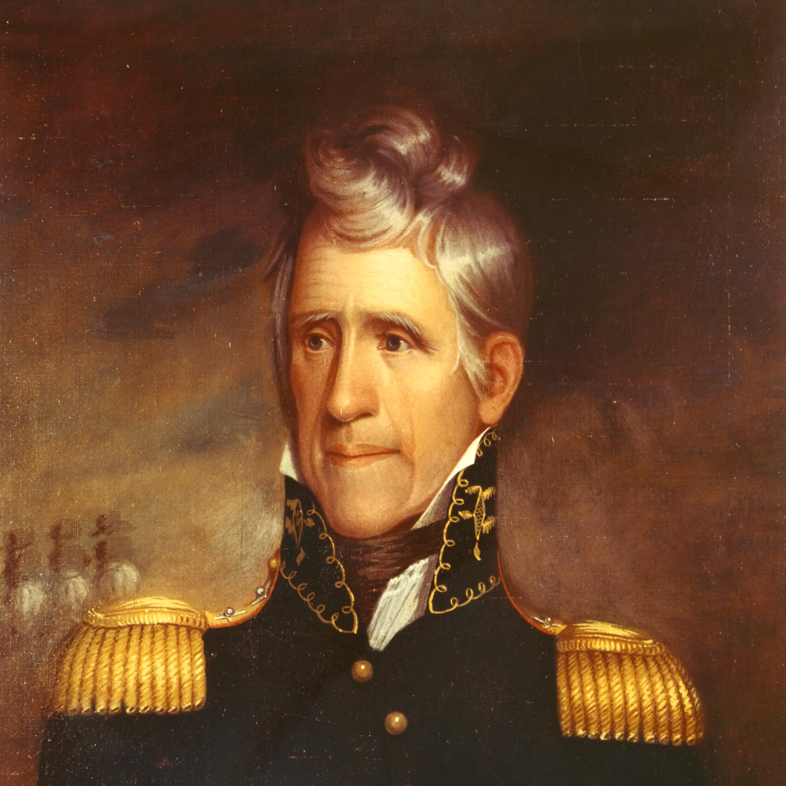

Finance Committee
Ensuring the long-term fiscal health of the Foundation, optimizing budgets, and securing the endowment for future generations.

Preserving American Legacy
Andrew Jackson’s Hermitage is a cornerstone of American history and a vital economic pillar of modern Tennessee. Mitchel Bone proudly serves on the Board of Trust, applying decades of business acumen to preserve the legacy of our nation’s seventh President.
Historical Significance
Andrew Jackson fundamentally transformed the American political landscape. Rising from frontier poverty to become a self-made military hero and the seventh President of the United States, Jackson championed the power of the common citizen and permanently expanded the authority of the executive branch. His leadership during the Battle of New Orleans forged an indomitable national identity.
The economic reality of preservation: today The Hermitage is much more than a 1,120-acre historical site — it is a major economic engine for Middle Tennessee, drawing hundreds of thousands of visitors annually, sustaining local jobs, and funding educational initiatives across the state.
At Wilson County Motors, we recognize that preserving our history requires rigorous financial stewardship. Supporting The Hermitage is an investment in the cultural and economic vitality of the region we have called home since 1927.

Executive Stewardship
As a member of the Board of Trust for the Andrew Jackson Foundation, Mitchel Bone is directly involved in the strategic, financial, and physical oversight of the estate.
Ensuring the long-term fiscal health of the Foundation, optimizing budgets, and securing the endowment for future generations.
Driving capital campaigns, securing grants, and expanding donor networks to fund preservation and educational operations.
Overseeing the maintenance, restoration, and archaeological integrity of the 1,120-acre National Historic Landmark.
Historical Truth
True historical stewardship demands an unvarnished commitment to the complete story of our past. In 2024, following a meticulous, year-long project of research, ground-penetrating radar, and expert archaeological surveying, The Hermitage publicly revealed the location of the enslaved cemetery on the property.
This monumental discovery brought to light the final resting place of the men, women, and children who lived, worked, and died in bondage at The Hermitage. We cannot understand the full scope of Andrew Jackson’s life, or the economic realities of the 19th-century South, without honoring the lives of the enslaved individuals who built and maintained the estate.
Wilson County Motors proudly supports the Foundation’s ongoing efforts to protect this sacred ground, conduct further respectful research, and ensure that every individual who shaped the history of The Hermitage is remembered with dignity and truth.
Signature Event
The Spring Outing is the Andrew Jackson Foundation’s premier fundraising event, bringing together Middle Tennessee’s top business leaders, philanthropists, and historians. This vital initiative directly funds the Foundation’s educational programs — reaching thousands of students annually — and ensures the continued preservation of the estate.
Mitchel Bone and the Wilson County Motors team proudly champion this event as an investment in the future of our state’s historical literacy.
Semiquincentennial Celebration
As the nation approaches its 250th Anniversary, The Hermitage is commemorating this milestone with the Path of Glory — a powerful visual tribute honoring the service, sacrifice, and enduring spirit of the American people who forged our nation.
Wilson County Motors is calling on our community to participate. By sponsoring a flag along the Path of Glory, you directly support the preservation of The Hermitage while cementing your family’s or business’s legacy in this once-in-a-generation celebration of American resilience.
Sponsor a Flag Today →Frequently Asked Questions
Mitchel Bone, Dealer Principal of Wilson County Chevrolet Buick GMC, serves on the Board of Trust for the Andrew Jackson Foundation. He is a member of the Finance, Development, and Property committees.
The Spring Outing is the Andrew Jackson Foundation’s premier annual fundraising event. Proceeds directly fund the Foundation’s educational programs and the preservation of the 1,120-acre estate.
The Path of Glory is The Hermitage’s commemorative flag installation honoring America’s 250th Anniversary. Sponsoring a flag supports the ongoing preservation of The Hermitage.
The Hermitage is a 1,120-acre National Historic Landmark located in Nashville, Tennessee, drawing hundreds of thousands of visitors annually.